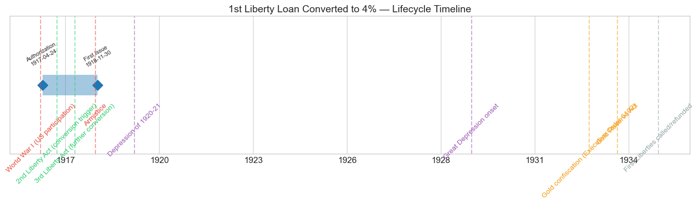
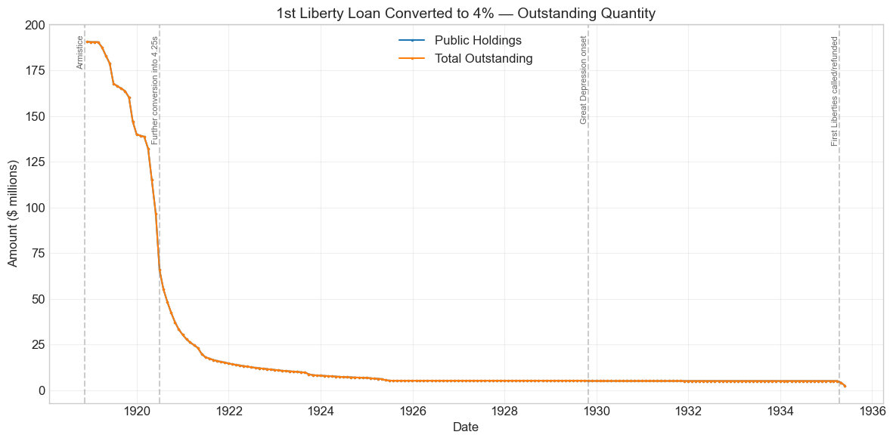
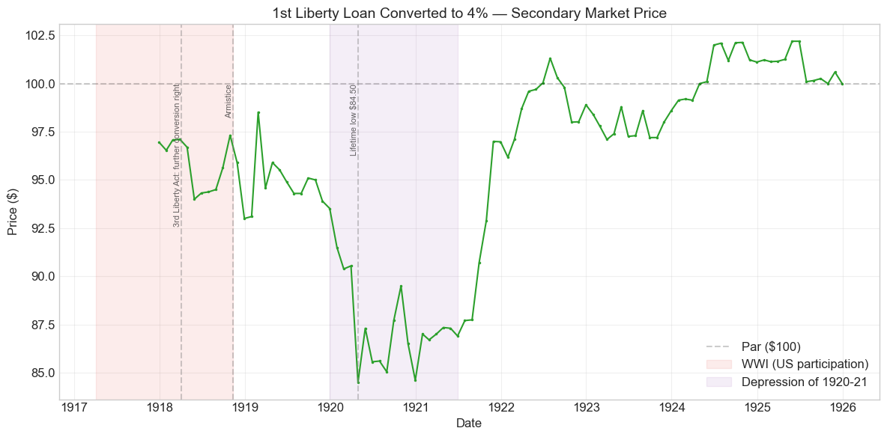
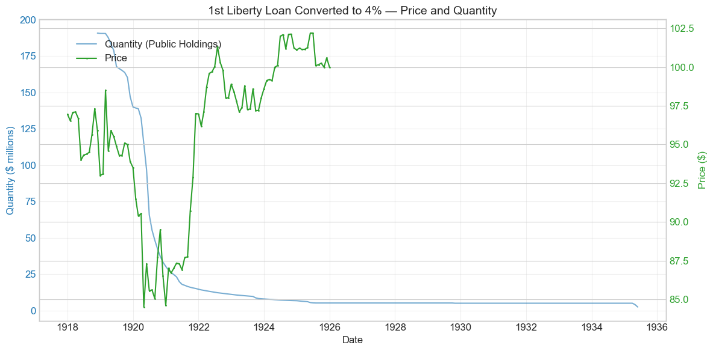
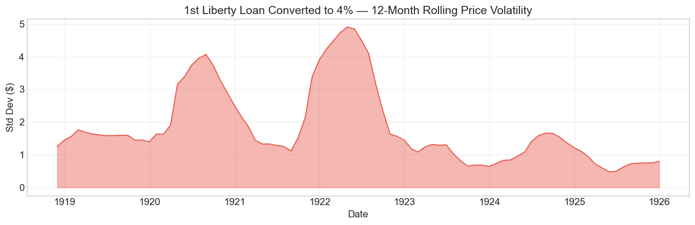

Bond Biography: 1st Liberty Loan Converted to 4%#
An Enhanced Chapter from the Hall-Payne-Sargent US Federal Bond Database (2,857 issues, 1776–1960)
Bond ID (L1): 20163 Category: Interest Bearing > Marketable > Liberty Loan Coupon Rate: 4.0% Redemption Terms: Redeemable on or after June 15, 1932; payable June 15, 1947 (the First Liberty Loan’s original 1932–47 terms) Created by: Exercise of the First Liberty Loan’s conversion privilege, late 1917–1918
A bond that was never sold, only chosen: every dollar of this issue came into existence when a holder of the original 3½% First Liberty bonds exercised the conversion privilege triggered by the Second Liberty Loan’s 4% coupon in the fall of 1917. The privilege embodied a promise – that patriotic subscribers would never be stranded more than one coupon-step behind the Treasury’s newest loan (Garbade 2012).
import pandas as pd
import numpy as np
import matplotlib.pyplot as plt
import matplotlib.patches as mpatches
import datetime
import warnings
warnings.filterwarnings('ignore')
plt.style.use('seaborn-v0_8-whitegrid')
plt.rcParams.update({'figure.figsize': (12, 6), 'font.size': 12,
'axes.titlesize': 14, 'axes.labelsize': 12})
# Load the bond database
store = pd.HDFStore('../data/BondDF.h5', mode='r')
BondList = store['BondList']
BondQuant = store['BondQuant']
BondPrice = store['BondPrice']
store.close()
BondQuant_T = BondQuant.transpose()
BondPrice_T = BondPrice.transpose()
bond_id = 20163
print(f'Loaded data for: 1st Liberty Loan Converted to 4% (ID: 20163)')
/Users/thomassargent/anaconda3/lib/python3.9/site-packages/pandas/core/arrays/masked.py:60: UserWarning: Pandas requires version '1.3.6' or newer of 'bottleneck' (version '1.3.5' currently installed).
from pandas.core import (
Loaded data for: 1st Liberty Loan Converted to 4% (ID: 20163)
Overview#
The 1st Liberty Loan Converted to 4% was authorized under the First Liberty Loan Act of April 24, 1917, carried a coupon rate of 4.0% payable semi-annually (June 15 and December 15), and retained the original First Liberty Loan’s redemption terms: callable on or after June 15, 1932, payable June 15, 1947. During its lifetime on the secondary market, the bond’s average price was $95.74, ranging from $84.50 to $102.20 (based on 97 monthly observations from December 1917 to December 1925). Peak outstanding in the database was $190.78 million, recorded in November 1918.
This bond was never sold to anyone. Nobody subscribed to it at a rally, no Boy Scout hawked it door to door, no poster bore its name. It came into existence entirely through the exercise of an option. When the Second Liberty Loan of October 1917 offered the public a 4% coupon, holders of the original 3½% First Liberty bonds (Bond ID 20162 — see that chapter for the full story of the parent issue and Secretary William Gibbs McAdoo’s national sales campaign) held a contractual right to exchange their bonds for new ones carrying the higher rate. Those who exercised that right received the security whose biography this is: the “First Liberties, converted” — same June 15, 1932–47 redemption terms as the parent, but a 4% coupon and, crucially, the Second Liberty Bond Act’s narrower tax exemption in place of the First Loan’s near-total one.
What makes this bond’s story distinctive in the arc of U.S. fiscal history is precisely its origin. It is one of the earliest examples of an embedded option in a mass-market Treasury security actually being exercised at scale — a financial derivative, in effect, held by millions of ordinary citizens who had bought bonds as an act of patriotism. And its life did not stop there: when the Third Liberty Loan of April 1918 set a 4¼% coupon, these 4% bonds acquired a further conversion right into 4¼s (Bond ID 20164, treated in a companion chapter). The quantity series below is therefore a running tally of a great sorting: those who converted again flowed out into the 4¼s, while those who stayed held a 4% bond all the way to the First Liberties’ endgame in the mid-1930s.
Historical Context#
The following major events occurred during this bond’s lifetime:
Date |
Event |
Category |
|---|---|---|
1917-04-06 to 1918-11-11 |
World War I (US participation) |
War |
1917-09-24 |
Second Liberty Bond Act (4% coupon triggers First Loan’s conversion privilege) |
Legislation |
1917-11/12 |
Conversion window: First 3½s exchangeable into 4s |
Fiscal |
1918-04-05 |
Third Liberty Loan Act (4¼% coupon triggers further conversion right) |
Legislation |
1918-11-11 |
Armistice |
War |
1920-01-01 to 1921-07-01 |
Depression of 1920–21 |
Crisis |
1929-10-29 to 1933-03-01 |
Great Depression onset |
Crisis |
1933-04-05 |
Gold confiscation (Executive Order 6102) |
Monetary |
1934-01-30 |
Gold Reserve Act |
Monetary |
1935 (first half) |
First Liberty Loan bonds called and refunded; series ends May 1935 |
Fiscal |
World War I created this bond and dominated its early market life. Wartime demand for Treasury paper was sustained by patriotic purchasing and by a Federal Reserve that deliberately kept its discount rate below the Liberty coupons to support the loans — machinery described in detail in the 1st and 2nd Liberty Loan chapters. But even that support could not hold a 4% bond at par when each successive loan offered more: the price record below opens in December 1917 in the mid-$90s and stays below par throughout the war.
The Depression of 1920–21 was the bond’s market nadir, as it was for every Liberty issue. The Federal Reserve’s sharp postwar tightening — the New York discount rate reached 7% by June 1920 — drove all the Liberty Loans into the low-to-mid 80s; this bond touched its lifetime low of $84.50 in April 1920. The subsequent deflation, the Mellon Treasury’s surpluses, and falling market rates powered a V-shaped recovery that carried the price back through par during 1922 and to a premium by 1924–25.
The Great Depression and the monetary upheavals of 1933–34 arrive late in this bond’s life, when only a residual $5 million of unconverted 4s remained outstanding. Like all Liberty bonds these were gold-clause securities, promising payment in gold coin of the 1917 standard; the abrogation of gold clauses in June 1933 and the Gold Reserve Act of 1934 (a story told more fully in the 4th Liberty Loan chapter) transformed that promise. When the era of cheap money made 4% look expensive rather than cheap, the Treasury exercised its option: the First Liberty bonds became callable on June 15, 1932, and were called and refunded in the mid-1930s. The quantity series ends in May 1935.
# Bond Lifecycle Timeline
fig, ax = plt.subplots(figsize=(14, 4))
# Key dates
dates = [('Authorization', '1917-04-24'), ('First Issue', '1918-11-30')]
events = [('World War I (US participation)', '1917-04-06', 'war'),
('2nd Liberty Act (conversion trigger)', '1917-09-24', 'legislation'),
('3rd Liberty Act (further conversion)', '1918-04-05', 'legislation'),
('Armistice', '1918-11-11', 'war'),
('Depression of 1920-21', '1920-01-01', 'crisis'),
('Great Depression onset', '1929-10-29', 'crisis'),
('Gold confiscation (Executive Order 6102)', '1933-04-05', 'monetary'),
('Gold Reserve Act', '1934-01-30', 'monetary'),
('First Liberties called/refunded', '1935-04-15', 'other')]
import matplotlib.dates as mdates
from datetime import datetime
# Plot bond lifetime bar
d0 = datetime.strptime(dates[0][1], '%Y-%m-%d')
d1 = datetime.strptime(dates[-1][1], '%Y-%m-%d')
ax.barh(0, (d1 - d0).days, left=mdates.date2num(d0), height=0.3,
color='#1f77b4', alpha=0.4, label='Bond Lifetime')
# Mark key dates
for label, date_str in dates:
d = datetime.strptime(date_str, '%Y-%m-%d')
ax.plot(mdates.date2num(d), 0, 'D', color='#1f77b4', markersize=10)
ax.annotate(f'{label}\n{date_str}', (mdates.date2num(d), 0.25),
ha='center', va='bottom', fontsize=8, rotation=30)
# Mark historical events
colors = {'war': '#e74c3c', 'crisis': '#9b59b6', 'legislation': '#2ecc71', 'other': '#95a5a6', 'monetary': '#f39c12'}
for name, date_str, cat in events:
d = datetime.strptime(date_str, '%Y-%m-%d')
ax.axvline(mdates.date2num(d), color=colors.get(cat, 'gray'), alpha=0.5, linestyle='--')
ax.annotate(name, (mdates.date2num(d), -0.25), ha='center', va='top',
fontsize=10, rotation=45, color=colors.get(cat, 'gray'))
ax.set_yticks([])
ax.xaxis.set_major_formatter(mdates.DateFormatter('%Y'))
ax.set_title('1st Liberty Loan Converted to 4% — Lifecycle Timeline')
ax.set_ylim(-1, 1)
plt.tight_layout()
plt.show()

Bond Features#
Feature |
Detail |
|---|---|
Name |
1st Liberty Loan Converted to 4% |
Authorizing Act |
April 24, 1917 (First Liberty Loan Act; conversion terms per the Second Liberty Bond Act of September 24, 1917) |
First Issue Date (database) |
November 30, 1918 (price quotations begin December 1917 — see note below) |
Term |
30 years (the First Loan’s original term) |
Redeemable After |
June 15, 1932 |
Payable |
June 15, 1947 |
Coupon Rate |
4.0% |
Payment Frequency |
Semi-annual (June 15 and December 15) |
Callable |
Yes |
Payable in Coin |
Yes (gold) |
Price Sold |
Par (obtained by exchange at par, not by cash subscription) |
Further Conversion Privilege |
Yes — into 4¼% bonds (ID 20164) once the Third Liberty Loan set that rate |
Tax Status |
The Second Act’s narrower exemption: free of state and local taxes and the normal federal income tax, but subject to federal surtaxes and excess-profits taxes — unlike the parent 3½s, which were exempt from essentially all taxation except estate and inheritance taxes |
A wrinkle worth noting: the database’s “first issue date” of November 30, 1918 reflects when the quantity bookkeeping first records the converted 4s as a separate line, but the price series for this bond begins in December 1917 — direct market evidence that converted 4% First Liberties existed and traded from the moment the first conversion window closed in late 1917. Conversions were executed on the Treasury’s books over many months; the database consolidates the accumulated stock at the November 1918 date.
# Display full bond features from database
row = BondList.loc[20163]
display_cols = [
"Treasury's Name Of Issue", 'Authorizing Act', 'Term Of Loan',
'First Issue Date', 'First Redemption Date', 'Final Redemption Date',
'Coupon Rate', 'Coupons Per Year', 'Callable', 'Coin',
'Authorized Amount', 'Price Sold'
]
print('Bond Features from Database:')
print('=' * 55)
for col in display_cols:
if col in row.index:
print(f' {col:<30} {row[col]}')
Bond Features from Database:
=======================================================
Treasury's Name Of Issue 1st Liberty Loan Converted to 4%
Authorizing Act April 24, 1917
Term Of Loan 30 years
First Issue Date 1918-11-30 00:00:00
First Redemption Date NaT
Final Redemption Date NaT
Coupon Rate 4.0
Coupons Per Year 2.0
Callable 1.0
Coin 1.0
Authorized Amount nan
Price Sold 1.0
The Conversion Privilege: An Option for Patriots#
Why would a Treasury desperate for money give its bonds away with a free option attached? The answer is the central design problem of the Liberty Loan program, described in the 1st Liberty Loan chapter and only summarized here. McAdoo priced the first loan at 3½% — below what an unsentimental market would have demanded — to signal confidence and keep debt service cheap. But he knew a long war would force coupon rates upward on later loans, and that millions of small patriotic subscribers, sold bonds at par as a civic duty, would then watch their 3½s sink below par. That was not merely a financial risk; it was a political one that could poison every subsequent campaign. The conversion privilege was the solution: a contractual promise that early subscribers would never be locked more than one step behind the Treasury’s newest coupon. In modern language, each Liberty bond came bundled with an exchange option; patriotism was capitalized, and the downside was hedged.
The Second Liberty Loan’s 4% coupon, announced under the Act of September 24, 1917, triggered the First Loan’s privilege. Holders faced a genuine choice, because the exchange was not a pure free lunch:
Take the extra half point. A 4% coupon instead of 3½% on the same 1932–47 bond — on its face, unambiguously better income.
But give up the tax shield. Converting meant accepting the Second Act’s narrower exemption. The original 3½s were free of essentially all federal taxation, including the wartime surtaxes that reached confiscatory levels on large incomes; the converted 4s were not. For a high-bracket investor, the surtax exemption on the 3½s could easily be worth more than half a point of coupon; for a small saver below the surtax threshold, it was worth nothing.
The result was a sorting by tax bracket and by attentiveness. The database records the outcome: of the roughly $2 billion of original First Liberties, the parent series (ID 20162) shows an outflow of roughly $575 million as conversion-era bookkeeping is recorded in November 1918 — by which point about $385 million had already moved on to the 4¼% variant (ID 20164) and about $191 million stood as converted 4s, the peak of this bond’s series. The great majority of First Loan holders — small savers and surtax-payers alike — never converted at all, a mixture of rational tax arithmetic and simple inertia. (The precise timing of individual exchanges is smoothed in the database; conversions ran from late 1917 through 1918.)
When the Third Liberty Loan Act of April 1918 set 4¼%, the story repeated one level up. The Third Loan itself carried no conversion privilege — the Treasury had learned how expensive the option was — but the outstanding First Loan 4s received a further right to convert into 4¼s. Notably, the further-conversion privilege on First Loan 4s remained open for years rather than lapsing after a short window (in contrast to the Second Loan 4s, whose privilege expired in November 1918 and produced a single-month, $2.8 billion cliff — see the 2nd Liberty Loan chapter). The consequence is visible below: instead of a cliff, a long, steady leak.
Bond Quantity Over Time#
The bond’s outstanding quantity peaked at $190.78 million on 1918-11-30 — the first observation in the series, since the stock was created by conversion rather than by subscription. Data span November 1918 to May 1935 (199 monthly observations).
The path is a biography in one line: a starting stock of $191 million; a persistent bleed as holders exercised the further-conversion right into the 4¼s — down to $140 million by end-1919, $30 million by end-1920, and $15 million by end-1921; a slow drift to about $5 million by the mid-1920s; a dead-flat decade at $5 million through the Depression years; and a final drop in April–May 1935 as the First Liberties were called and refunded.
# Bond quantity over time
fig, ax = plt.subplots(figsize=(12, 6))
for stype in ['Public Holdings', 'Total Outstanding']:
try:
s = BondQuant_T.loc[(20163, stype)]
s = s[s.notna()]
if len(s) > 0:
ax.plot(s.index, s.values / 1e6, marker='.', markersize=3, linewidth=1.5, label=stype)
except KeyError:
pass
ax.set_title('1st Liberty Loan Converted to 4% — Outstanding Quantity')
ax.set_xlabel('Date')
ax.set_ylabel('Amount ($ millions)')
ax.legend()
ax.grid(True, alpha=0.3)
events = {'1918-11-11': 'Armistice',
'1920-06-30': 'Further conversion into 4.25s',
'1929-10-29': 'Great Depression onset',
'1935-04-15': 'First Liberties called/refunded'}
for date_str, label in events.items():
d = pd.Timestamp(date_str)
ax.axvline(d, color='gray', alpha=0.4, linestyle='--')
ax.text(d, ax.get_ylim()[1]*0.97, label, rotation=90, va='top', ha='right', fontsize=8, alpha=0.7)
plt.tight_layout()
plt.show()

Quantity Analysis#
Three forces drove the pattern, and each is legible in the data:
1. Birth by conversion (recorded November 1918). The series opens at its maximum, $190.78 million. There is no installment ramp-up of the kind that shaped the original loans’ quantity paths, because nothing was being sold: this stock is the accumulated result of 3½% holders exercising their exchange right, which the database consolidates at November 30, 1918.
2. The further-conversion leak (1918–1920s). The dominant feature of the chart is the decline from $191 million to about $15 million in barely three years. This was not redemption — the bonds were not even callable until 1932 — but migration into the 4¼% variant. The database shows the two series moving as mirror images: as this bond’s public holdings fell from $190.8M (November 1918) to $140.0M (December 1919) to $30.3M (December 1920) to $14.6M (December 1921), holdings of ID 20164 rose from $384.5M to $410.8M to $508.5M to $523.9M over the same months — an almost dollar-for-dollar transfer. The leak accelerated sharply in the spring of 1920 (note the -31.9% single month in June 1920), exactly when market interest rates peaked: with the bond price in the mid-80s and money tight, an extra quarter point of coupon, free for the asking, was at its most valuable and hardest to ignore. Since both the 4s and the 4¼s shared the Second Act’s tax status, this further conversion — unlike the first — involved no tax sacrifice; failing to exercise was simply leaving money on the table, and the residue that never converted is a small monument to investor inattention.
3. The 1935 endgame. After the leak subsided, roughly $5 million of unconverted 4s sat motionless from the mid-1920s until 1935. The First Liberty Loan bonds became redeemable at the Treasury’s option on June 15, 1932, and in the low-interest-rate environment of the mid-1930s the Treasury called the outstanding First Liberties for redemption, refunding them into new, cheaper securities. The series drops from $5.0M (March 1935) to $4.1M (April) to $2.4M at its final observation in May 1935 — and the 4¼% sibling series (ID 20164) collapses from $532M to $160M over the same two months, confirming that this was the common endgame of the whole First Liberty family rather than anything specific to this bond.
Secondary Market Prices#
Overall Statistics (1917-12-31 to 1925-12-31): Mean $95.74, Range $84.50–$102.20, Std Dev $5.03, 97 observations.
By Period:
Period |
Mean |
Std |
Min |
Max |
Obs |
|---|---|---|---|---|---|
Start to database issue date (1917-12 to 1918-11) |
$95.87 |
$1.26 |
$94.00 |
$97.32 |
12 |
Issue to end (1918-11 to 1925-12) |
$95.73 |
$5.33 |
$84.50 |
$102.20 |
86 |
The price record of this conversion-born bond divides into three acts, and it tracks its Liberty siblings closely throughout (the comparison chart below makes the family resemblance vivid):
Wartime, below par (December 1917 – November 1918). The converted 4s appear in the quotations at $96.96 in December 1917 and trade in a narrow $94–$97 band through the Armistice. Below par from the first print: even a 4% coupon was under what the market required once the Third Loan’s 4¼% became the Treasury’s going rate in the spring of 1918 — though the still-open right to convert into those 4¼s cushioned the discount.
The postwar slide (1919 – spring 1920). After a soft patch around the turn of 1918–19 (a $93 print in December 1918–January 1919) and a sharp snap-back in February 1919, the bond was dragged down with the whole Liberty complex by postwar inflation, the Victory Loan’s competing 4¾% coupon, and above all the Federal Reserve’s tightening. The lifetime low of $84.50 came in April 1920, with the New York discount rate on its way to 7%.
Deflation, recovery, premium (late 1920 – 1925). As the 1920–21 depression broke the inflation and market rates fell, the price recovered in the same V shape as its siblings: back through the mid-90s during 1921, through par during 1922–23, and to a premium peak of $102.20 in May–June 1925. The price series ends in December 1925 at exactly $100.00 — a bond that had become a quiet near-par security, held by a rump of unconverted holders, awaiting the call that would come a decade later.
# Annotated price chart
fig, ax = plt.subplots(figsize=(12, 6))
s = BondPrice_T.loc[(20163, 'Average')]
s = pd.to_numeric(s, errors='coerce').dropna()
if len(s) > 0:
ax.plot(s.index, s.values, marker='.', markersize=3, linewidth=1.5, color='#2ca02c')
ax.axhline(100, color='black', alpha=0.2, linestyle='--', label='Par ($100)')
ax.axvspan(pd.Timestamp('1917-04-06'), pd.Timestamp('1918-11-11'),
alpha=0.10, color='#e74c3c', label='WWI (US participation)')
ax.axvspan(pd.Timestamp('1920-01-01'), pd.Timestamp('1921-07-01'),
alpha=0.10, color='#9b59b6', label='Depression of 1920-21')
ax.set_title('1st Liberty Loan Converted to 4% — Secondary Market Price')
ax.set_xlabel('Date')
ax.set_ylabel('Price ($)')
ax.legend(loc='lower right')
ax.grid(True, alpha=0.3)
events = {'1918-04-05': '3rd Liberty Act: further conversion right',
'1918-11-11': 'Armistice',
'1920-04-30': 'Lifetime low $84.50'}
for date_str, label in events.items():
d = pd.Timestamp(date_str)
ax.axvline(d, color='gray', alpha=0.4, linestyle='--')
ax.text(d, ax.get_ylim()[1]*0.97, label, rotation=90, va='top', ha='right', fontsize=8, alpha=0.7)
plt.tight_layout()
plt.show()

# Price and Quantity — dual-axis chart
fig, ax1 = plt.subplots(figsize=(12, 6))
# Quantity (left axis)
for stype in ['Public Holdings', 'Total Outstanding']:
try:
q = BondQuant_T.loc[(20163, stype)]
q = q[q.notna()]
if len(q) > 0:
ax1.plot(q.index, q.values / 1e6, color='#1f77b4', alpha=0.6, label=f'Quantity ({stype})')
break
except KeyError:
pass
ax1.set_xlabel('Date')
ax1.set_ylabel('Quantity ($ millions)', color='#1f77b4')
ax1.tick_params(axis='y', labelcolor='#1f77b4')
# Price (right axis)
ax2 = ax1.twinx()
p = BondPrice_T.loc[(20163, 'Average')]
p = pd.to_numeric(p, errors='coerce').dropna()
if len(p) > 0:
ax2.plot(p.index, p.values, color='#2ca02c', marker='.', markersize=2, label='Price')
ax2.set_ylabel('Price ($)', color='#2ca02c')
ax2.tick_params(axis='y', labelcolor='#2ca02c')
ax1.set_title('1st Liberty Loan Converted to 4% — Price and Quantity')
ax1.grid(True, alpha=0.3)
fig.legend(loc='upper left', bbox_to_anchor=(0.1, 0.9))
plt.tight_layout()
plt.show()

Detected Price/Quantity Events#
The following significant movements were auto-detected, with causal analysis:
Date |
Type |
Change |
Explanation |
|---|---|---|---|
1919-02 |
Price spike |
+5.8% |
Recovery from a soft patch: the price had sagged to $93 in December 1918–January 1919, plausibly reflecting post-Armistice portfolio liquidation (subscribers who had “borrowed and bought” during the war unwinding positions, and year-end selling pressure across the Liberty list). The February rebound to $98.52 restored the bond to its wartime range. With no single news event that cleanly explains a round trip of this size, some of the move may also reflect thin quotations in a market where most of the First Loan family’s trading had migrated to the 4¼s. |
1920-04 |
Price drop |
-6.7% |
The Federal Reserve’s postwar tightening in full force: the New York discount rate had been raised to 6% in January 1920 and would reach 7% in June. The drop to the lifetime low of $84.50 is the same squeeze visible in every Liberty issue that month. |
1920-06 |
Quantity decrease |
-31.9% |
Not redemption but further conversion: public holdings fell from $96.7M to $65.8M in a single month while holdings of the 4¼% variant (ID 20164) rose from $442M to $473M. At the bottom of the bear market, with money dear, the free quarter-point pickup from converting was at its most compelling. |
1935-05 |
Quantity decrease |
-41.3% |
The endgame: the Treasury’s call and refunding of the First Liberty Loan bonds, redeemable since June 15, 1932. The drop from $4.1M to $2.4M at the series’ final observation is mirrored, at 100 times the scale, in the 4¼% sibling’s collapse from $532M to $160M over April–May 1935. The auto-detector found “no event” because the cause was a Treasury debt-management operation, not a market shock. |
Price Volatility#
Maximum drawdown: -14.2% (from peak on 1919-02-28 to trough on 1920-04-30)
Average monthly return: 0.046%
The chart below shows the 12-month rolling standard deviation of prices, indicating periods of high and low price stability. The volatility profile is the standard Liberty Loan signature: a calm wartime plateau (the “patriotic premium” and Federal Reserve support acting as shock absorbers), a spike through the 1920–21 rate cycle and its V-shaped aftermath, and a long placid decline through 1923–25 as the bond settled into near-par respectability. Compared with the parent 3½s’ maximum drawdown of -14.6% and the 4% Seconds’ -15.6%, this bond’s -14.2% confirms that once created, the converted Firsts were priced as just another claim on the same Treasury, riding the same interest-rate cycle.
# Rolling volatility (12-month window)
p = BondPrice_T.loc[(20163, 'Average')]
p = pd.to_numeric(p, errors='coerce').dropna()
if len(p) >= 12:
rolling_std = p.rolling(window=12).std().dropna()
fig, ax = plt.subplots(figsize=(12, 4))
ax.fill_between(rolling_std.index, rolling_std.values, alpha=0.4, color='#e74c3c')
ax.plot(rolling_std.index, rolling_std.values, color='#e74c3c', linewidth=1)
ax.set_title('1st Liberty Loan Converted to 4% — 12-Month Rolling Price Volatility')
ax.set_xlabel('Date')
ax.set_ylabel('Std Dev ($)')
ax.grid(True, alpha=0.3)
plt.tight_layout()
plt.show()
else:
print('Insufficient data for rolling volatility (need >= 12 observations)')

Issuance, Distribution, and Redemption#
The bond was recorded at par ($100 per $100 of face value) — but “sold” is the wrong verb. This issue had no offering campaign, no subscription books, and no underwriters. Every certificate came into existence when a holder of an original 3½% First Liberty bond presented it for exchange under the conversion privilege, receiving in return a 4% bond of the same face value, same 1932–47 redemption terms, and the Second Act’s tax status. Distribution was therefore inherited: the holders of the converted 4s were, by construction, a subset of the First Loan’s roughly 4 million subscribers — the individuals, banks, and corporations described in the 1st Liberty Loan chapter — filtered by their decision to exercise.
That filter had economics in it. The holders most likely to convert were those for whom the extra half point outweighed the surrendered surtax exemption: small savers below the surtax brackets, institutions attentive enough to run the arithmetic, and anyone who simply followed the Treasury’s well-publicized invitation. The wealthiest holders had strong reasons to keep their fully-exempt 3½s, and the least attentive never acted at all — which is why the great bulk of the original $2 billion issue stayed unconverted while roughly $575 million moved (most of it continuing on to the 4¼s once the Third Loan reset the going rate in April 1918).
Redemption came in two movements. First, the slow self-liquidation through further conversion: as documented above, the stock of 4s shrank from $191 million to about $5 million between 1918 and the mid-1920s, not through any Treasury payment but through exchange into the 4¼% variant. Second, the actual cash-and-refunding endgame: the First Liberty bonds became callable on June 15, 1932, and in the cheap-money mid-1930s the Treasury called the outstanding First Liberties, offering holders exchange into new lower-coupon securities or cash redemption. The database’s final observations — $5.0M in March 1935, $2.4M in May 1935 — capture that operation in progress; the small residual at the series’ end presumably represents called bonds not yet presented for payment.
Implications and Legacy#
An Early Embedded Option in Mass-Market Treasuries#
Convertible securities were familiar in the corporate bond market of 1917, but building an exchange option into a sovereign issue held by millions of small savers — and then honoring it at scale — was new. The 1st Liberty Loan Converted to 4% is the artifact that proves the mechanism worked: an entire line in the Treasury’s ledger consisting of nothing but exercised options. Its quantity series is, in effect, a time series of option exercise — a rare thing to observe directly in any market, let alone in 1918. Modern readers will recognize the family resemblance to exchange offers and refunding conversions that became standard Treasury debt-management tools; the Liberty program ran the experiment first, on the largest retail investor base ever assembled to that date.
The Price of Protecting Patriots#
The conversion privilege did its political job — no early subscriber was left stranded at 3½% while neighbors bought 4¼s — but it taught the Treasury how expensive such protection is. Each conversion silently raised the interest bill on debt already sold: every dollar that migrated from 3½ to 4 to 4¼ cost the Treasury three-quarters of a point a year for decades, with no new cash raised. Officials drew the lesson quickly: the Third and Fourth Liberty Loans carried no general conversion privilege, and the Treasury never again attached open-ended coupon-escalator options to its bonds. The device that saved the Liberty campaigns politically was retired as fiscal policy.
A Natural Experiment in Investor Behavior#
Because conversion was voluntary, this bond’s records constitute an unusually clean natural experiment. The first-round choice (3½ versus 4) had genuine economics on both sides — coupon against tax exemption — and the population sorted accordingly. The second-round choice (4 versus 4¼) had, for most holders, only one defensible answer, since the tax status was identical; yet the exchange took years, accelerating only when the 1920 rate spike made the forgone quarter point painfully visible, and a residual never converted at all. Financial economists studying the sluggish exercise of clearly profitable options — in mortgage refinancing, in bond exchanges — would find in this series one of the earliest large-sample data points.
The Long Tail and the Endgame#
The flat $5 million shelf running from the mid-1920s to 1935 is its own small commentary on retail government debt: bonds tucked in drawers and safe-deposit boxes, held by owners indifferent to a quarter point, outliving the war, the boom, and the crash. Like all Liberty bonds these were gold-clause obligations, and their final years passed through the monetary regime change of 1933–34 — the gold-clause abrogation whose Supreme Court test involved the Liberty family (a story told in the 4th Liberty Loan chapter). When the Treasury called the First Liberties in the mid-1930s, refinancing 4s and 4¼s into far cheaper paper, the wheel came full circle: a bond born from an option held by investors was extinguished by the option the Treasury had retained for itself since 1917 — the call. Between those two option exercises lies the whole life of this quiet, instructive security.
References#
Primary Database#
Payne, J., Szoke, A., Hall, G. & Sargent, T. (2025). Quarterly Journal of Economics.
Primary Sources#
First Liberty Loan Act, Act of April 24, 1917, ch. 4, 40 Stat. 35.
Second Liberty Bond Act, Act of September 24, 1917, ch. 56, 40 Stat. 288 (and subsequent amendments).
Third Liberty Loan Act, Act of April 4, 1918, ch. 44, 40 Stat. 502.
Annual Report of the Secretary of the Treasury on the State of the Finances, 1917–1919 and 1935. Washington: Government Printing Office.
Scholarly Works#
Garbade, K. D. (2012). Birth of a Market: The U.S. Treasury Securities Market from the Great War to the Great Depression. MIT Press. (The standard account of the Liberty Loan conversion privileges and the 1930s refundings.)
Kang, S. W. & Rockoff, H. (2015). “Capitalizing Patriotism: The Liberty Loans of World War I.” Financial History Review, 22(1): 45–78.
Rockoff, H. (2012). America’s Economic Way of War: War and the US Economy from the Spanish-American War to the First Gulf War. Cambridge University Press.
Friedman, M. & Schwartz, A. J. (1963). A Monetary History of the United States, 1867–1960. Princeton University Press.
Studenski, P. & Krooss, H. E. (1952). Financial History of the United States. McGraw-Hill.
Historical Sources#
Federal Reserve History. “Liberty Bonds.” Link
Silber, W. L. (2007). When Washington Shut Down Wall Street: The Great Financial Crisis of 1914 and the Origins of America’s Monetary Supremacy. Princeton University Press.
Tooze, A. (2014). The Deluge: The Great War, America and the Remaking of the Global Order, 1916–1931. Penguin Books.
Enhanced Bond Biography generated from the Hall-Payne-Sargent Bond Database. Original auto-generated chapter enriched with historical narrative, comparative analysis, and contextual visualizations. See the companion chapters on the 1st Liberty Loan (ID 20162), the 2nd Liberty Loan (ID 20166), and the 4¼% converted Firsts (ID 20164) for the machinery of the Liberty campaigns, the Second Liberty Bond Act, and the further-conversion story continued.